Parede Celular
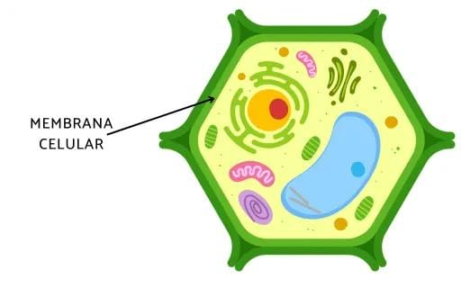A parede celular é uma camada rígida que envolve a célula vegetal, fornecendo proteção e suporte estrutural. Ela é composta principalmente por celulose.
Membrana Plasmática
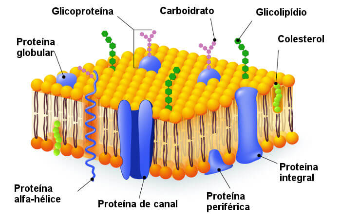Logo abaixo da parede celular, a membrana plasmática regula a entrada e saída de substâncias.
Citoplasma
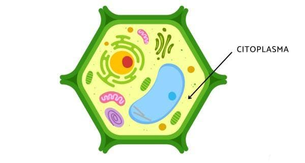O citoplasma é a parte interna da célula, onde ocorre a maior parte das atividades celulares. Ele contém várias organelas.
Núcleo
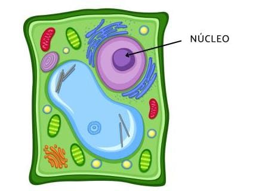O núcleo é o centro de controle da célula, abrigando o material genético (DNA) responsável por controlar todas as atividades celulares.
Cloroplastos
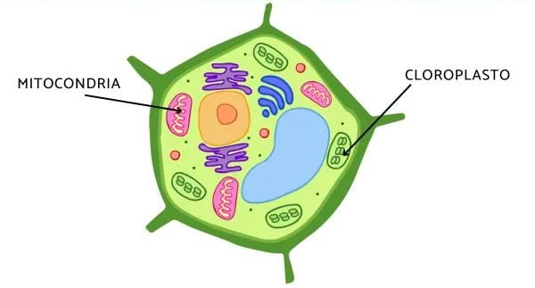Os cloroplastos são organelas exclusivas das células vegetais que realizam a fotossíntese, transformando luz solar em energia química.
Vacuolo Central
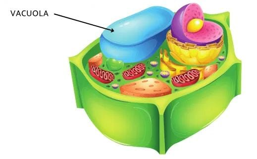Um grande vacúolo central está presente na maioria das células vegetais, ajudando a manter a forma da célula e armazenando água, nutrientes e resíduos.
Retículo Endoplasmático
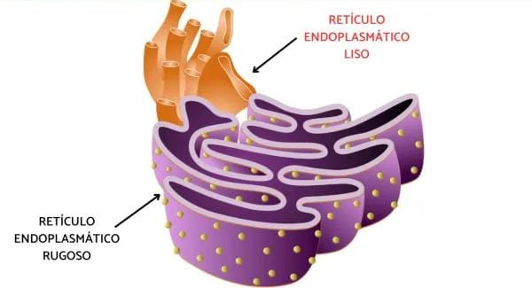O retículo endoplasmático liso e rugoso participa na síntese de proteínas e lipídios, além de transportar substâncias dentro da célula.
Complexo de Golgi
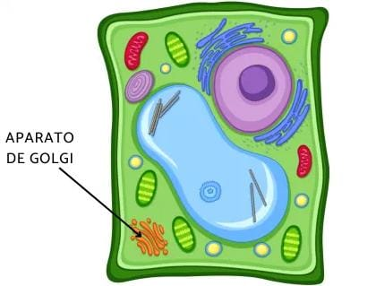Essa organela está envolvida na modificação, empacotamento e transporte de proteínas e outras moléculas.
Mitocôndria
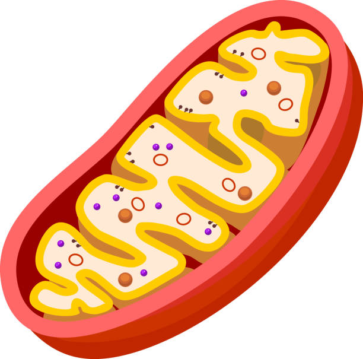As mitocôndrias são organelas de formato esférico ou alongado encontradas em quase todas as células eucariontes, isto é, células que se caracterizam pela presença de material genético envolto pela membrana nuclear.
Lissomos
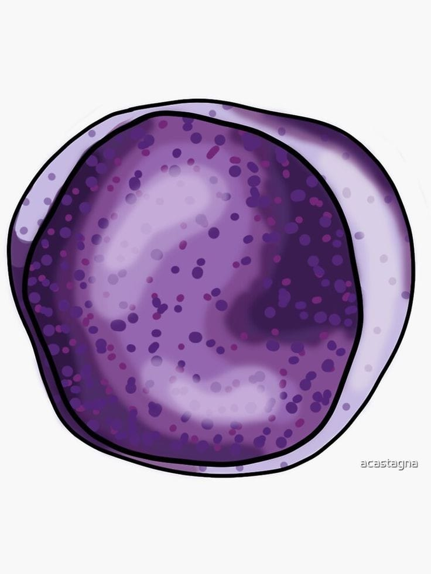Lisossomos Primários e Secundários. No Complexo de Golgi são formadas vesículas que se soltam originando os lisossomos primários.
Ribossomos
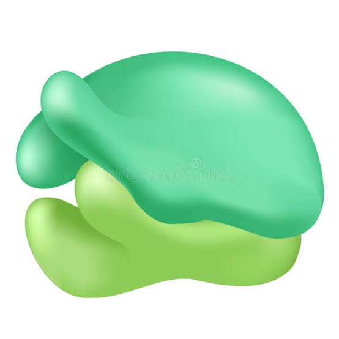Trata-se de pequenas partículas que medem de 20 nm a 30 nm, sem membranas e formadas por proteínas e RNA ribossomal (RNAr).